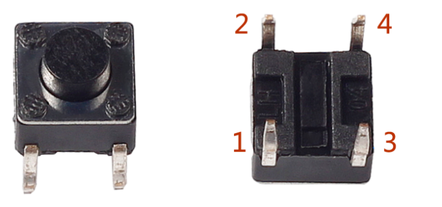
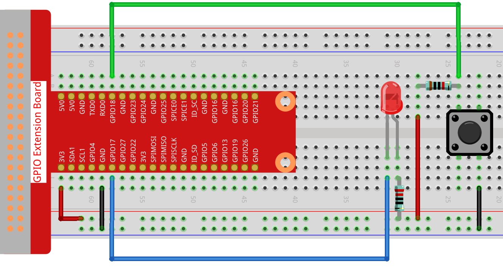

Nota
¡Hola! Bienvenido a la comunidad de entusiastas de SunFounder para Raspberry Pi, Arduino y ESP32 en Facebook. Únete para profundizar en Raspberry Pi, Arduino y ESP32 junto a otros apasionados.
¿Por qué unirse?
Soporte de expertos: Resuelve problemas postventa y desafíos técnicos con la ayuda de nuestra comunidad y equipo.
Aprender y compartir: Intercambia consejos y tutoriales para mejorar tus habilidades.
Acceso exclusivo: Obtén primicias sobre nuevos productos y adelantos.
Descuentos especiales: Disfruta de descuentos exclusivos en nuestros productos más recientes.
Promociones festivas y sorteos: Participa en sorteos y promociones de temporada.
üëâ ¬øListo para explorar y crear con nosotros? Haz clic en [Aqu√≠] y únete hoy mismo.
2.1.1 Botón
Introducción
En esta lección, aprenderemos cómo encender o apagar un LED usando un botón.
Componentes

Principio
Botón
El botón es un componente común utilizado para controlar dispositivos electrónicos. Se usa normalmente como interruptor para conectar o desconectar circuitos. Aunque los botones vienen en diversos tamaños y formas, el que utilizamos aquí es un mini-botón de 6 mm, como se muestra en las siguientes imágenes.
Los dos pines de la izquierda están conectados entre sí, y el de la derecha es similar al de la izquierda, como se muestra a continuación:
{kind=link}
El símbolo que se muestra a continuación es el que se usa habitualmente para representar un botón en los circuitos.

Cuando se presiona el botón, los 4 pines se conectan, cerrando el circuito.
Diagrama Esquemático
Utiliza un botón normalmente abierto como entrada para la Raspberry Pi. La conexión se muestra en el diagrama esquemático a continuación. Cuando se presiona el botón, el GPIO18 pasará a nivel bajo (0V). Podemos detectar el estado del GPIO18 mediante programación. Es decir, si el GPIO18 cambia a nivel bajo, significa que el botón ha sido presionado. Puedes ejecutar el código correspondiente cuando se presiona el botón y el LED se encenderá.
Nota
La pata más larga del LED es el ánodo y la más corta es el cátodo.


Procedimientos Experimentales
Paso 1: Construye el circuito.
{kind=link}
Para Usuarios de Lenguaje C
Paso 2: Abre el archivo de código.
cd ~/davinci-kit-for-raspberry-pi/c/2.1.1/
Nota
Cambia el directorio a la ruta del código de este experimento usando cd.
Paso 3: Compila el código.
gcc 2.1.1_Button.c -lwiringPi
Paso 4: Ejecuta el archivo compilado.
sudo ./a.out
Después de ejecutar el código, al presionar el botón, el LED se encenderá; de lo contrario, se apagará.
Nota
Si no funciona después de ejecutarlo, o aparece un mensaje de error: "wiringPi.h: No such file or directory», consulta c code is not working?.
Código
#include <wiringPi.h>
#include <stdio.h>
#define LedPin 0
#define ButtonPin 1
int main(void){
// Si la inicialización de wiring falla, imprime un mensaje en pantalla
if(wiringPiSetup() == -1){
printf("setup wiringPi failed !");
return 1;
}
pinMode(LedPin, OUTPUT);
pinMode(ButtonPin, INPUT);
digitalWrite(LedPin, HIGH);
while(1){
// Indica que el botón ha sido presionado
if(digitalRead(ButtonPin) == 0){
// Enciende el LED
digitalWrite(LedPin, LOW);
// printf("...LED encendido\n");
}
else{
// Apaga el LED
digitalWrite(LedPin, HIGH);
// printf("LED apagado...\n");
}
}
return 0;
}
Explicación del Código
#define LedPin 0
El pin GPIO17 en la placa T_Extension es equivalente al GPIO0 en wiringPi.
#define ButtonPin 1
ButtonPin está conectado al GPIO1.
pinMode(LedPin, OUTPUT);
Configura LedPin como salida para asignarle un valor.
pinMode(ButtonPin, INPUT);
Configura ButtonPin como entrada para leer su valor.
while(1){
// Indica que el botón ha sido presionado
if(digitalRead(ButtonPin) == 0){
// Enciende el LED
digitalWrite(LedPin, LOW);
// printf("...LED encendido\n");
}
else{
// Apaga el LED
digitalWrite(LedPin, HIGH);
// printf("LED apagado...\n");
}
}
if (digitalRead(ButtonPin) == 0): verifica si el botón ha sido presionado. Ejecuta digitalWrite(LedPin, LOW) cuando el botón es presionado para encender el LED.
Para Usuarios de Lenguaje Python
Paso 2: Abre el archivo de código.
cd ~/davinci-kit-for-raspberry-pi/python
Paso 3: Ejecuta el código.
sudo python3 2.1.1_Button.py
Ahora, presiona el botón y el LED se encenderá; presiona el botón nuevamente y el LED se apagará. Al mismo tiempo, el estado del LED se mostrará en la pantalla.
Código
Nota
Puedes Modificar/Restablecer/Copiar/Ejecutar/Detener el código a continuación. Antes de eso, necesitas dirigirte a la ruta del código fuente como davinci-kit-for-raspberry-pi/python.
import RPi.GPIO as GPIO
import time
LedPin = 17 # Configura GPIO17 como el pin del LED
BtnPin = 18 # Configura GPIO18 como el pin del botón
Led_status = True # Configura el estado inicial del LED como True (APAGADO)
# Define una función de configuración inicial
def setup():
# Configura los modos GPIO al sistema de numeración BCM
GPIO.setmode(GPIO.BCM)
GPIO.setup(LedPin, GPIO.OUT, initial=GPIO.HIGH) # Configura LedPin como salida y el nivel inicial como alto (3.3V)
GPIO.setup(BtnPin, GPIO.IN) # Configura BtnPin como entrada.
# Define una función de callback para el botón
def swLed(ev=None):
global Led_status
# Cambia el estado del LED (encendido-->apagado; apagado-->encendido)
Led_status = not Led_status
GPIO.output(LedPin, Led_status)
if Led_status:
print ('LED OFF...')
else:
print ('...LED ON')
# Define la función principal del proceso
def main():
# Configura una detección de caída en BtnPin,
# y la función de callback swLed
GPIO.add_event_detect(BtnPin, GPIO.FALLING, callback=swLed)
while True:
# No realizar ninguna acción
time.sleep(1)
# Define una función destroy para limpiar todo después de
# que el script termine
def destroy():
# Apaga el LED
GPIO.output(LedPin, GPIO.HIGH)
# Libera los recursos
GPIO.cleanup()
# Si ejecutas este script directamente, haz:
if __name__ == '__main__':
setup()
try:
main()
# Cuando se presiona 'Ctrl+C', se ejecutará la función
# destroy()
except KeyboardInterrupt:
destroy()
Explicación del Código
LedPin = 17
Configura GPIO17 como el pin del LED.
BtnPin = 18
Configura GPIO18 como el pin del botón.
GPIO.add_event_detect(BtnPin, GPIO.FALLING, callback=swLed)
Configura una detección de caída en BtnPin, de manera que cuando el valor de BtnPin cambie de alto a bajo, esto indica que el botón fue presionado. El siguiente paso es llamar a la función swLed.
def swLed(ev=None):
global Led_status
# Cambia el estado del LED (encendido-->apagado; apagado-->encendido)
Led_status = not Led_status
GPIO.output(LedPin, Led_status)
Define una función de callback para el botón. Cuando se presiona el botón por primera vez, y la condición not Led_status es falsa, la función GPIO. output() se llama para encender el LED. Al presionar el botón nuevamente, el estado del LED se convierte de falso a verdadero, y el LED se apagará.
Imagen del Fenómeno